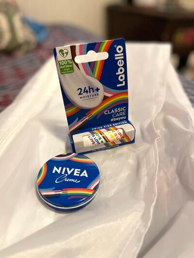

Already gone.
9 pieces that have found homes. Everything here is one of a kind, so once it sells it is genuinely gone — but it shows what tends to move, and most of what I list is similar in spirit.

Brand new limited edition LGBTQ rainbow theme lip balm by Labello and moisturiser by Nivea. Ideal pride gift of skin care. #skincare #selfcare

Called spellbinding, addictive, and wonderful by major critics. A surreal, dreamlike masterpiece weaving together a runaway teenager and an old man…

Beautiful handmade cotton tote bag from India, in a classic hand block-printed paisley design. Deep red, indigo blue and sage green on a natural…

Beautiful navy dress covered in a charming vintage-style print of songbirds, blossom and branches in mustard, coral, teal and pink. A flattering…

Beautiful handmade Indian block-print summer dress in classic green with a contrast deep-red, a traditional Indian design called Ajrakh. Made with…

Striking colour-block dress with a cream bodice and a tan skirt, finished with a bold navy tribal-style border print and a dramatic asymmetric…

Stunning full-length Indian cotton skirt in a rich kalamkari-style floral print in deep burgundy, rust, tan and cream on a dark base. Beautifully…

Lovely sleeveless cotton tunic top in a deep brown, covered in a geometric and floral print in cream, a palette and design with an Indian…

Beautiful handmade dress in brown colour with a cream leaf motif, which is a classic Indian block-print style. Handcrafted in Delhi by Anoshka…
Nothing matches those filters.
Prices are converted from Czech koruna at the European Central Bank reference rate and rounded to the nearest euro. Vinted charges in your own currency at checkout, so the amount you pay may differ slightly.
How buying works
- Ask first, if you want. Measurements, fabric, how something actually fits — message me and I will tell you straight, including when a piece is not right for you.
- Buy it on Vinted. Every piece links to its listing. Payment, postage and buyer protection are all handled there, so there is no separate checkout on this site and I never see your card details.
- It posts from Prague. Usually within a day or two of the order. Vinted's buyer protection covers the return if the item is not as described.
Everything is second-hand or one-of-a-kind from my own collection, so each piece exists once — when it is gone it is gone. Sizes are the label size; ask me for real measurements before you buy.